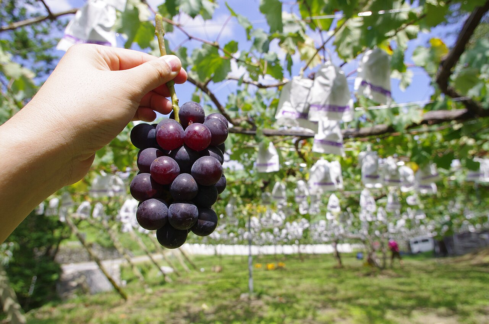
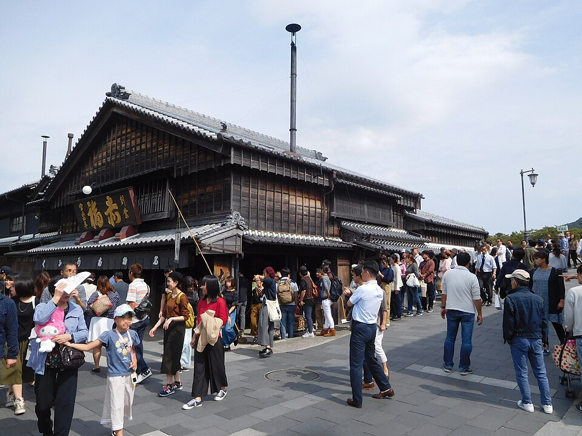
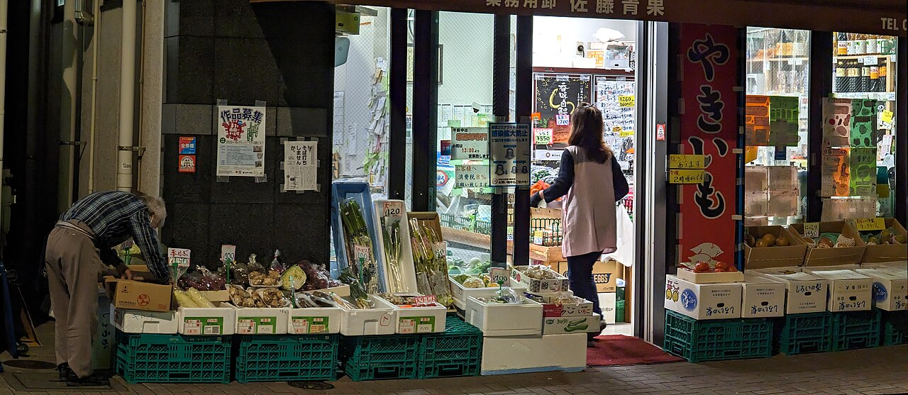
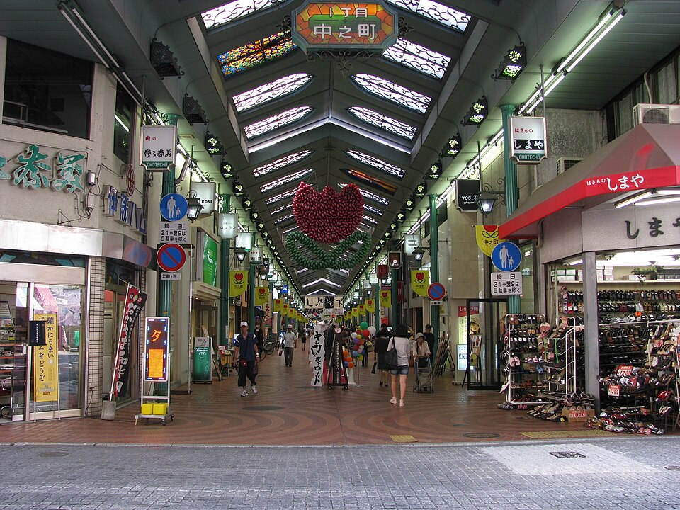

洋梨のパフェ
2,200円
山形のラ・フランス。11月半ばまで。
- 白ワインのジュレ
- 洋梨のコンポート
- バニラのブランマンジェ
- キャラメルのクランブル
- 洋梨のソルベ
- 生クリーム
- ラ・フランスの生（6切れ）
並木台銀座商店街 青果まるやまの2階

2名さま・11月8日（日）

| 10月31日（土） | 13:05 |
| 11月1日（日） | 12:40 |
| 11月3日（火・祝） | 13:50 |
| 平日（4日〜6日） | 17:30 |
週末は昼すぎに終わります。配り終えたら、階段の下に「本日の整理券は終わりました」の札を出します。

11:00–18:00
